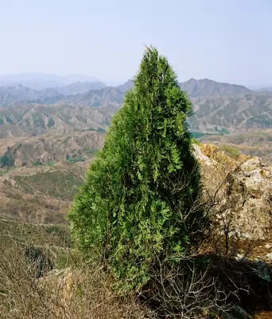

pranet · 出典付きの植物図鑑
コノテガシワ
Platycladus orientalis (L.) Franco · Cupressaceae

コノテガシワ は、裸子植物マツ綱のヒノキ科コノテガシワ属に分類される常緑針葉樹の1種であり、コノテガシワ属の唯一の現生種である。クロベ属（Thuja）や Biota に分類されたこともある。中国名は側柏。小枝は平面状に分枝し、十字対生する鱗片状の葉によって扁平に覆われ、ふつう垂直に伸び、ヒノキなどと異なり表裏の違いを示さない。このような垂直に伸びて広がった小枝の様子を、子供が手のひらを立てていることに見立てて「コノテガシワ」の名の由来となったとされる。未熟な球果はやや多肉質であるが、秋に熟すと木質、果鱗先端は盾状にならず、小角状の突起がある。中国原産であるが、世界各地で観賞用に植栽されている。また、枝葉や種子は生薬とされることがある。
出典: Wikipedia 日本語版「コノテガシワ」 · CC BY-SA 4.0
異名: Biota chengii (Bordères & Gaussen) Bordères & Gaussen, Biota coraeana Siebold ex Gordon & Glend., Biota dumosa Carrière, Biota elegantissima Beissn., Biota ericoides Carrière, Biota excelsa Gordon, Biota falcata Carrière, Biota fortunei Carrière, Biota freneloides hort. ex Gordon, Biota funiculata Gordon, Biota glauca Carrière, Biota gracilifolia Knight, Biota intermedia Gordon, Biota japonica Siebold ex Gordon, Biota macrocarpa Gordon, Biota meldensis P.Lawson ex Gordon, Biota nepalensis Endl. ex Gordon, Biota orientalis (L.) Endl., Biota pendula (Thunb.) Endl., Biota prostrata Gordon
同定や利用は自己責任でお願いします。この図鑑だけを根拠に野生の植物を食べないでください。
出典
- 学名: World Flora Online Plant List 2026-06 · CC0 1.0
- 名前: Wikipedia の記事名と Wikidata · CC0 1.0（Wikidata）。記事名は事実
- 説明: Wikipedia 日本語版「コノテガシワ」 · CC BY-SA 4.0
- 食用・毒性: World Checklist of Useful Plant Species (Diazgranados et al. 2020, RBG Kew) · CC BY 4.0
- 分布: World Checklist of Vascular Plants (WCVP), RBG Kew, version 2026-06-04 · CC BY 3.0
このページは pranet のデータから自動生成しています。コードは MIT、データは項目ごとのライセンス（説明）。